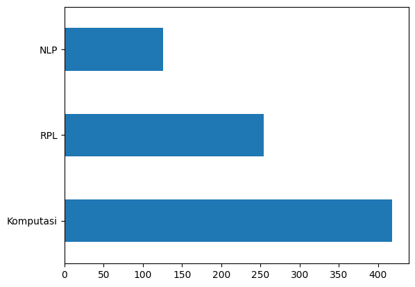

#UTS Olah Data PTA
pip install --upgrade scikit-learn
Looking in indexes: https://pypi.org/simple, https://us-python.pkg.dev/colab-wheels/public/simple/
Requirement already satisfied: scikit-learn in /usr/local/lib/python3.9/dist-packages (1.2.2)
Requirement already satisfied: threadpoolctl>=2.0.0 in /usr/local/lib/python3.9/dist-packages (from scikit-learn) (3.1.0)
Requirement already satisfied: scipy>=1.3.2 in /usr/local/lib/python3.9/dist-packages (from scikit-learn) (1.10.1)
Requirement already satisfied: numpy>=1.17.3 in /usr/local/lib/python3.9/dist-packages (from scikit-learn) (1.22.4)
Requirement already satisfied: joblib>=1.1.1 in /usr/local/lib/python3.9/dist-packages (from scikit-learn) (1.1.1)
import numpy as np
import pandas as pd
Ambil Data#
df = pd.read_excel('TabelPtaFix.xlsx')
df.head(10)
FileNotFoundErrorTraceback (most recent call last)
<ipython-input-3-f140450068ba> in <cell line: 1>()
----> 1 df = pd.read_excel('TabelPtaFix.xlsx')
2 df.head(10)
/usr/local/lib/python3.9/dist-packages/pandas/util/_decorators.py in wrapper(*args, **kwargs)
309 stacklevel=stacklevel,
310 )
--> 311 return func(*args, **kwargs)
312
313 return wrapper
/usr/local/lib/python3.9/dist-packages/pandas/io/excel/_base.py in read_excel(io, sheet_name, header, names, index_col, usecols, squeeze, dtype, engine, converters, true_values, false_values, skiprows, nrows, na_values, keep_default_na, na_filter, verbose, parse_dates, date_parser, thousands, decimal, comment, skipfooter, convert_float, mangle_dupe_cols, storage_options)
455 if not isinstance(io, ExcelFile):
456 should_close = True
--> 457 io = ExcelFile(io, storage_options=storage_options, engine=engine)
458 elif engine and engine != io.engine:
459 raise ValueError(
/usr/local/lib/python3.9/dist-packages/pandas/io/excel/_base.py in __init__(self, path_or_buffer, engine, storage_options)
1374 ext = "xls"
1375 else:
-> 1376 ext = inspect_excel_format(
1377 content_or_path=path_or_buffer, storage_options=storage_options
1378 )
/usr/local/lib/python3.9/dist-packages/pandas/io/excel/_base.py in inspect_excel_format(content_or_path, storage_options)
1248 content_or_path = BytesIO(content_or_path)
1249
-> 1250 with get_handle(
1251 content_or_path, "rb", storage_options=storage_options, is_text=False
1252 ) as handle:
/usr/local/lib/python3.9/dist-packages/pandas/io/common.py in get_handle(path_or_buf, mode, encoding, compression, memory_map, is_text, errors, storage_options)
793 else:
794 # Binary mode
--> 795 handle = open(handle, ioargs.mode)
796 handles.append(handle)
797
FileNotFoundError: [Errno 2] No such file or directory: 'TabelPtaFix.xlsx'
Mencari Data Null#
df.isnull().sum()
NIM 0
Nama 10
Judul 6
Abstrak 29
Kelas 37
dtype: int64
df.dropna(inplace=True)
df.isnull().sum()
NIM 0
Nama 0
Judul 0
Abstrak 0
Kelas 0
dtype: int64
Data Tidak Null#
df.count()
NIM 798
Nama 798
Judul 798
Abstrak 798
Kelas 798
dtype: int64
Mengecek total Class#
# Jumlah data pada masing-masing label KBK
df['Kelas'].value_counts()
Komputasi 418
RPL 254
NLP 126
Name: Kelas, dtype: int64
Grafik Class#
import matplotlib.pyplot as plt
df['Kelas'].value_counts().plot(kind='barh')
plt.show()

Cleaning Data#
import re, string
# Data Clean
def clean(data):
# HTML Tag Removal
data = re.compile('<.*?>|&([a-z0-9]+|#[0-9]{1,6}|#x[0-9a-f]{1,6});').sub('', str(data))
# Case folding
data = data.lower()
# Trim data
data = data.strip()
# Remove punctuations, karakter spesial, and spasi ganda
data = re.compile('<.*?>').sub('', data)
data = re.compile('[%s]' % re.escape(string.punctuation)).sub(' ', data)
data = re.sub('\s+', ' ', data)
# Number removal
data = re.sub(r'\[[0-9]*\]', ' ', data)
data = re.sub(r'[^\w\s]', '', str(data).lower().strip())
data = re.sub(r'\d', ' ', data)
data = re.sub(r'\s+', ' ', data)
# Mengubah data 'nan' dengan whitespace agar nantinya dapat dihapus
data = re.sub('nan', '', data)
return data
df['Judul'] = df['Judul'].apply(lambda x: clean(x))
df['Abstrak'] = df['Abstrak'].apply(lambda x: clean(x))
df.head()
| NIM | Nama | Judul | Abstrak | Kelas | |
|---|---|---|---|---|---|
| 0 | 70411100070 | Heri Supriyanto | sistem pendukung keputusan optimasi penjadwala... | penjadwalan kuliah di perguruan tinggi merupak... | Komputasi |
| 1 | 80411100115 | Septian Rahman Hakim | sistem augmented reality animasi benda bergera... | seiring perkembangan teknologi yang ada diduni... | Komputasi |
| 2 | 70411100126 | NURRACHMAT | rancang bangun game perawatan sapi karapan men... | perkembangan game yang semakin pesat memberika... | Komputasi |
| 3 | 70411100109 | Muhammad Choirur Rozi | ekstraksi fitur berbasis two dimensional linea... | sistem pengenalan wajah adalah suatu sistem un... | Komputasi |
| 4 | 70411100143 | Robiatul Adawiyah, S.Kom | aplikasi metode fuzzy analytic network process... | perusahaan pemerintah maupun swasta mempunyai ... | Komputasi |
Export Data yang sudah dibersihkan#
# Checkpoint: Export Hasil Text Cleaning
df.to_csv('hasilcleaning.csv')
Menghapus Missing Value#
# Ubah empty string menjadi NaN value
df = df.replace('', np.nan)
# Cek missing values
df.isnull().sum()
NIM 0
Nama 0
Judul 0
Abstrak 5
Kelas 0
dtype: int64
# Remove missing values
df.dropna(inplace=True)
len(df)
793
Menghapus Duplicate Value#
# Cek apakah terdapat duplikasi data pada kolom judul
df[df['Judul'].duplicated()]
| NIM | Nama | Judul | Abstrak | Kelas | |
|---|---|---|---|---|---|
| 355 | 120411100015 | Abdul Ainur Rofik | sistem pendukung keputusan pemilihan pemain bo... | peningkatan pembinaan permai bola voli terutam... | Komputasi |
Cek Data Kolom Judul#
# Remove duplicates judul
df.drop_duplicates(subset=['Judul'], inplace=True)
# Cek apakah masih terdapat duplikasi data pada kolom judul
df[df['Judul'].duplicated()]
| NIM | Nama | Judul | Abstrak | Kelas |
|---|
Cek Data Duplikasi Abstrak#
# Remove duplicates abstrak
df.drop_duplicates(subset=['Abstrak'], inplace=True)
# Cek apakah masih terdapat duplikasi data pada kolom abstrak
df[df['Abstrak'].duplicated()]
| NIM | Nama | Judul | Abstrak | Kelas |
|---|
# Checkpoint: Export Hasil Preprocessing
df.to_csv('hasilduplikasi.csv')
# Distribusi Kelas setelah Text Preprocessing
df['Kelas'].value_counts().plot(kind='barh')
plt.show()

Tokenisasi#
Memisahkan setiap kata
import nltk
from nltk.tokenize import word_tokenize
# nltk.download('punkt')
nltk.download('popular')
[nltk_data] Downloading collection 'popular'
[nltk_data] |
[nltk_data] | Downloading package cmudict to /root/nltk_data...
[nltk_data] | Unzipping corpora/cmudict.zip.
[nltk_data] | Downloading package gazetteers to /root/nltk_data...
[nltk_data] | Unzipping corpora/gazetteers.zip.
[nltk_data] | Downloading package genesis to /root/nltk_data...
[nltk_data] | Unzipping corpora/genesis.zip.
[nltk_data] | Downloading package gutenberg to /root/nltk_data...
[nltk_data] | Unzipping corpora/gutenberg.zip.
[nltk_data] | Downloading package inaugural to /root/nltk_data...
[nltk_data] | Unzipping corpora/inaugural.zip.
[nltk_data] | Downloading package movie_reviews to
[nltk_data] | /root/nltk_data...
[nltk_data] | Unzipping corpora/movie_reviews.zip.
[nltk_data] | Downloading package names to /root/nltk_data...
[nltk_data] | Unzipping corpora/names.zip.
[nltk_data] | Downloading package shakespeare to /root/nltk_data...
[nltk_data] | Unzipping corpora/shakespeare.zip.
[nltk_data] | Downloading package stopwords to /root/nltk_data...
[nltk_data] | Unzipping corpora/stopwords.zip.
[nltk_data] | Downloading package treebank to /root/nltk_data...
[nltk_data] | Unzipping corpora/treebank.zip.
[nltk_data] | Downloading package twitter_samples to
[nltk_data] | /root/nltk_data...
[nltk_data] | Unzipping corpora/twitter_samples.zip.
[nltk_data] | Downloading package omw to /root/nltk_data...
[nltk_data] | Downloading package omw-1.4 to /root/nltk_data...
[nltk_data] | Downloading package wordnet to /root/nltk_data...
[nltk_data] | Downloading package wordnet2021 to /root/nltk_data...
[nltk_data] | Downloading package wordnet31 to /root/nltk_data...
[nltk_data] | Downloading package wordnet_ic to /root/nltk_data...
[nltk_data] | Unzipping corpora/wordnet_ic.zip.
[nltk_data] | Downloading package words to /root/nltk_data...
[nltk_data] | Unzipping corpora/words.zip.
[nltk_data] | Downloading package maxent_ne_chunker to
[nltk_data] | /root/nltk_data...
[nltk_data] | Unzipping chunkers/maxent_ne_chunker.zip.
[nltk_data] | Downloading package punkt to /root/nltk_data...
[nltk_data] | Unzipping tokenizers/punkt.zip.
[nltk_data] | Downloading package snowball_data to
[nltk_data] | /root/nltk_data...
[nltk_data] | Downloading package averaged_perceptron_tagger to
[nltk_data] | /root/nltk_data...
[nltk_data] | Unzipping taggers/averaged_perceptron_tagger.zip.
[nltk_data] |
[nltk_data] Done downloading collection popular
True
Tokenisasi Judul#
# Tokenizing Judul
df['judul_tokens'] = df['Judul'].apply(lambda x: word_tokenize(x))
df[["Judul", "judul_tokens"]].head()
| Judul | judul_tokens | |
|---|---|---|
| 0 | sistem pendukung keputusan optimasi penjadwala... | [sistem, pendukung, keputusan, optimasi, penja... |
| 1 | sistem augmented reality animasi benda bergera... | [sistem, augmented, reality, animasi, benda, b... |
| 2 | rancang bangun game perawatan sapi karapan men... | [rancang, bangun, game, perawatan, sapi, karap... |
| 3 | ekstraksi fitur berbasis two dimensional linea... | [ekstraksi, fitur, berbasis, two, dimensional,... |
| 4 | aplikasi metode fuzzy analytic network process... | [aplikasi, metode, fuzzy, analytic, network, p... |
Tokenisasi Judul#
# Tokenizing Judul
df['judul_tokens'] = df['Judul'].apply(lambda x: word_tokenize(x))
df[["Judul", "judul_tokens"]].head()
| Judul | judul_tokens | |
|---|---|---|
| 0 | sistem pendukung keputusan optimasi penjadwala... | [sistem, pendukung, keputusan, optimasi, penja... |
| 1 | sistem augmented reality animasi benda bergera... | [sistem, augmented, reality, animasi, benda, b... |
| 2 | rancang bangun game perawatan sapi karapan men... | [rancang, bangun, game, perawatan, sapi, karap... |
| 3 | ekstraksi fitur berbasis two dimensional linea... | [ekstraksi, fitur, berbasis, two, dimensional,... |
| 4 | aplikasi metode fuzzy analytic network process... | [aplikasi, metode, fuzzy, analytic, network, p... |
Tokenisasi Abstrak#
# Tokenizing Abstrak
df['abstrak_tokens'] = df['Abstrak'].apply(lambda x: word_tokenize(x))
df[["Abstrak", "abstrak_tokens"]].head()
| Abstrak | abstrak_tokens | |
|---|---|---|
| 0 | penjadwalan kuliah di perguruan tinggi merupak... | [penjadwalan, kuliah, di, perguruan, tinggi, m... |
| 1 | seiring perkembangan teknologi yang ada diduni... | [seiring, perkembangan, teknologi, yang, ada, ... |
| 2 | perkembangan game yang semakin pesat memberika... | [perkembangan, game, yang, semakin, pesat, mem... |
| 3 | sistem pengenalan wajah adalah suatu sistem un... | [sistem, pengenalan, wajah, adalah, suatu, sis... |
| 4 | perusahaan pemerintah maupun swasta mempunyai ... | [perusahaan, pemerintah, maupun, swasta, mempu... |
Menghapus Kata Tidak Penting#
nltk.download('stopwords')
[nltk_data] Downloading package stopwords to /root/nltk_data...
[nltk_data] Package stopwords is already up-to-date!
True
from nltk.corpus import stopwords
from itertools import chain
stop_words = set(chain(stopwords.words('indonesian'), stopwords.words('english')))
df['judul_tokens'] = df['judul_tokens'].apply(lambda x: [w for w in x if not w in stop_words])
df['abstrak_tokens'] = df['abstrak_tokens'].apply(lambda x: [w for w in x if not w in stop_words])
Stop Word Judul#
df[["Abstrak", "abstrak_tokens"]].head()
| Abstrak | abstrak_tokens | |
|---|---|---|
| 0 | penjadwalan kuliah di perguruan tinggi merupak... | [penjadwalan, kuliah, perguruan, kompleks, per... |
| 1 | seiring perkembangan teknologi yang ada diduni... | [seiring, perkembangan, teknologi, didunia, mu... |
| 2 | perkembangan game yang semakin pesat memberika... | [perkembangan, game, pesat, alternative, pemin... |
| 3 | sistem pengenalan wajah adalah suatu sistem un... | [sistem, pengenalan, wajah, sistem, mengenali,... |
| 4 | perusahaan pemerintah maupun swasta mempunyai ... | [perusahaan, pemerintah, swasta, tujuan, dicap... |
Stemming#
!pip install sastrawi
Looking in indexes: https://pypi.org/simple, https://us-python.pkg.dev/colab-wheels/public/simple/
Collecting sastrawi
Downloading Sastrawi-1.0.1-py2.py3-none-any.whl (209 kB)
━━━━━━━━━━━━━━━━━━━━━━━━━━━━━━━━━━━━━━━ 209.7/209.7 KB 7.5 MB/s eta 0:00:00
?25hInstalling collected packages: sastrawi
Successfully installed sastrawi-1.0.1
from Sastrawi.Stemmer.StemmerFactory import StemmerFactory
from tqdm.auto import tqdm
tqdm.pandas()
factory = StemmerFactory()
stemmer = factory.create_stemmer()
Stemming Judul#
# Stemming judul
df['judul_tokens'] = df['judul_tokens'].progress_apply(lambda x: stemmer.stem(' '.join(x)).split(' '))
# Hasil stemming judul
df[["Judul", "judul_tokens"]].head()
| Judul | judul_tokens | |
|---|---|---|
| 0 | sistem pendukung keputusan optimasi penjadwala... | [sistem, dukung, putus, optimasi, jadwal, mata... |
| 1 | sistem augmented reality animasi benda bergera... | [sistem, augmented, reality, animasi, benda, g... |
| 2 | rancang bangun game perawatan sapi karapan men... | [rancang, bangun, game, awat, sapi, karapan, m... |
| 3 | ekstraksi fitur berbasis two dimensional linea... | [ekstraksi, fitur, bas, two, dimensional, line... |
| 4 | aplikasi metode fuzzy analytic network process... | [aplikasi, metode, fuzzy, analytic, network, p... |
Stemming Abstrak#
# Stemming abstrak
df['abstrak_tokens'] = df['abstrak_tokens'].progress_apply(lambda x: stemmer.stem(' '.join(x)).split(' '))
# Hasil stemming abstrak
df[["Abstrak", "abstrak_tokens"]].head()
| Abstrak | abstrak_tokens | |
|---|---|---|
| 0 | penjadwalan kuliah di perguruan tinggi merupak... | [jadwal, kuliah, guru, kompleks, masalah, vari... |
| 1 | seiring perkembangan teknologi yang ada diduni... | [iring, kembang, teknologi, dunia, muncul, tek... |
| 2 | perkembangan game yang semakin pesat memberika... | [kembang, game, pesat, alternative, minat, ben... |
| 3 | sistem pengenalan wajah adalah suatu sistem un... | [sistem, kenal, wajah, sistem, nali, identitas... |
| 4 | perusahaan pemerintah maupun swasta mempunyai ... | [usaha, perintah, swasta, tuju, capai, capai, ... |
df['judul_tokens'] = df['judul_tokens'].apply(lambda x: ' '.join(x))
df['abstrak_tokens'] = df['abstrak_tokens'].apply(lambda x: ' '.join(x))
df.to_csv('DataOlah_Pta.csv')
dataOlah = pd.read_csv('DataOlah_Pta.csv', index_col=0)
dataOlah.head()
| NIM | Nama | Judul | Abstrak | Kelas | judul_tokens | abstrak_tokens | |
|---|---|---|---|---|---|---|---|
| 0 | 70411100070 | Heri Supriyanto | sistem pendukung keputusan optimasi penjadwala... | penjadwalan kuliah di perguruan tinggi merupak... | Komputasi | sistem dukung putus optimasi jadwal matakuliah... | jadwal kuliah guru kompleks masalah variabel t... |
| 1 | 80411100115 | Septian Rahman Hakim | sistem augmented reality animasi benda bergera... | seiring perkembangan teknologi yang ada diduni... | Komputasi | sistem augmented reality animasi benda gerak f... | iring kembang teknologi dunia muncul teknologi... |
| 2 | 70411100126 | NURRACHMAT | rancang bangun game perawatan sapi karapan men... | perkembangan game yang semakin pesat memberika... | Komputasi | rancang bangun game awat sapi karapan metode f... | kembang game pesat alternative minat bentuk ga... |
| 3 | 70411100109 | Muhammad Choirur Rozi | ekstraksi fitur berbasis two dimensional linea... | sistem pengenalan wajah adalah suatu sistem un... | Komputasi | ekstraksi fitur bas two dimensional linear dis... | sistem kenal wajah sistem nali identitas wajah... |
| 4 | 70411100143 | Robiatul Adawiyah, S.Kom | aplikasi metode fuzzy analytic network process... | perusahaan pemerintah maupun swasta mempunyai ... | Komputasi | aplikasi metode fuzzy analytic network process... | usaha perintah swasta tuju capai capai tuju us... |
Modeling Data#
from sklearn.model_selection import train_test_split
X = dataOlah['abstrak_tokens']
y = dataOlah['Kelas']
X_train, X_test, y_train, y_test = train_test_split(X, y, test_size=0.3, random_state=42)
Ekstraksi Fitur#
term frequency–inverse document frequency
from sklearn.feature_extraction.text import TfidfVectorizer
vectorizer = TfidfVectorizer()
X_tfidf = vectorizer.fit_transform(X)
terms = vectorizer.get_feature_names_out()
df_tfidfvect = pd.DataFrame(data = X_tfidf.toarray(),columns = terms)
df_tfidfvect
| aalysis | aam | abad | abadi | abai | abdi | ability | abjad | absah | absensi | ... | zara | zat | zcz | zf | zona | zone | zoning | zoom | zucara | zungu | |
|---|---|---|---|---|---|---|---|---|---|---|---|---|---|---|---|---|---|---|---|---|---|
| 0 | 0.0 | 0.0 | 0.0 | 0.0 | 0.0 | 0.000000 | 0.0 | 0.0 | 0.0 | 0.0 | ... | 0.0 | 0.0 | 0.0 | 0.0 | 0.0 | 0.0 | 0.0 | 0.0 | 0.0 | 0.0 |
| 1 | 0.0 | 0.0 | 0.0 | 0.0 | 0.0 | 0.000000 | 0.0 | 0.0 | 0.0 | 0.0 | ... | 0.0 | 0.0 | 0.0 | 0.0 | 0.0 | 0.0 | 0.0 | 0.0 | 0.0 | 0.0 |
| 2 | 0.0 | 0.0 | 0.0 | 0.0 | 0.0 | 0.000000 | 0.0 | 0.0 | 0.0 | 0.0 | ... | 0.0 | 0.0 | 0.0 | 0.0 | 0.0 | 0.0 | 0.0 | 0.0 | 0.0 | 0.0 |
| 3 | 0.0 | 0.0 | 0.0 | 0.0 | 0.0 | 0.000000 | 0.0 | 0.0 | 0.0 | 0.0 | ... | 0.0 | 0.0 | 0.0 | 0.0 | 0.0 | 0.0 | 0.0 | 0.0 | 0.0 | 0.0 |
| 4 | 0.0 | 0.0 | 0.0 | 0.0 | 0.0 | 0.000000 | 0.0 | 0.0 | 0.0 | 0.0 | ... | 0.0 | 0.0 | 0.0 | 0.0 | 0.0 | 0.0 | 0.0 | 0.0 | 0.0 | 0.0 |
| ... | ... | ... | ... | ... | ... | ... | ... | ... | ... | ... | ... | ... | ... | ... | ... | ... | ... | ... | ... | ... | ... |
| 787 | 0.0 | 0.0 | 0.0 | 0.0 | 0.0 | 0.000000 | 0.0 | 0.0 | 0.0 | 0.0 | ... | 0.0 | 0.0 | 0.0 | 0.0 | 0.0 | 0.0 | 0.0 | 0.0 | 0.0 | 0.0 |
| 788 | 0.0 | 0.0 | 0.0 | 0.0 | 0.0 | 0.000000 | 0.0 | 0.0 | 0.0 | 0.0 | ... | 0.0 | 0.0 | 0.0 | 0.0 | 0.0 | 0.0 | 0.0 | 0.0 | 0.0 | 0.0 |
| 789 | 0.0 | 0.0 | 0.0 | 0.0 | 0.0 | 0.000000 | 0.0 | 0.0 | 0.0 | 0.0 | ... | 0.0 | 0.0 | 0.0 | 0.0 | 0.0 | 0.0 | 0.0 | 0.0 | 0.0 | 0.0 |
| 790 | 0.0 | 0.0 | 0.0 | 0.0 | 0.0 | 0.139159 | 0.0 | 0.0 | 0.0 | 0.0 | ... | 0.0 | 0.0 | 0.0 | 0.0 | 0.0 | 0.0 | 0.0 | 0.0 | 0.0 | 0.0 |
| 791 | 0.0 | 0.0 | 0.0 | 0.0 | 0.0 | 0.000000 | 0.0 | 0.0 | 0.0 | 0.0 | ... | 0.0 | 0.0 | 0.0 | 0.0 | 0.0 | 0.0 | 0.0 | 0.0 | 0.0 | 0.0 |
792 rows × 5965 columns
X_tfidf.shape
(792, 5965)
sums = X_tfidf.sum(axis=0)
data = []
for col, term in enumerate (terms):
data.append((term, sums[0,col]))
ranking = pd.DataFrame(data, columns=['term', 'rank'])
print(ranking.sort_values('rank', ascending=False))
term rank
4994 sistem 31.673256
1063 data 28.687578
3310 metode 28.507928
875 citra 28.484632
1914 hasil 26.823249
... ... ...
4901 setabil 0.050156
2511 keseimbanganya 0.050156
3143 mbps 0.045885
2034 idle 0.045885
4341 qos 0.045885
[5965 rows x 2 columns]
Oversampling#
SMOTE
y_train.value_counts()
Komputasi 288
RPL 181
NLP 85
Name: Kelas, dtype: int64
from imblearn.over_sampling import SMOTE
X_train_resampled, y_train_resampled = SMOTE(random_state=42).fit_resample(X_train_tfidf, y_train)
y_train_resampled.value_counts()
NLP 288
Komputasi 288
RPL 288
Name: Kelas, dtype: int64
PCA#
X_tfidf.shape
(792, 5965)
from sklearn.decomposition import PCA
pca = PCA(n_components=10)
X_pca = pca.fit_transform(X_tfidf.toarray())
X_pca.shape
(792, 10)
Training Data#
X_train, X_test, y_train, y_test = train_test_split(X_pca, y, test_size=0.3, random_state=42)
Naive Bayes#
from sklearn.naive_bayes import GaussianNB
bayes = GaussianNB()
model_bayes = bayes.fit(X_train,y_train)
predictions_bayes = model_bayes.predict(X_test)
KNN#
from sklearn.neighbors import KNeighborsClassifier
knn = KNeighborsClassifier(n_neighbors=3)
model_knn = knn.fit(X_train,y_train)
predictions_knn = model_knn.predict(X_test)
Evaluasi#
predictions = model.predict(X_test_tfidf)
# Report the confusion matrix
from sklearn import metrics
print(metrics.confusion_matrix(y_test,predictions))
[[85 17 24]
[18 11 10]
[22 7 44]]
!pip install -U scikit-learn
Looking in indexes: https://pypi.org/simple, https://us-python.pkg.dev/colab-wheels/public/simple/
Requirement already satisfied: scikit-learn in /usr/local/lib/python3.9/dist-packages (1.2.2)
Requirement already satisfied: joblib>=1.1.1 in /usr/local/lib/python3.9/dist-packages (from scikit-learn) (1.1.1)
Requirement already satisfied: numpy>=1.17.3 in /usr/local/lib/python3.9/dist-packages (from scikit-learn) (1.22.4)
Requirement already satisfied: scipy>=1.3.2 in /usr/local/lib/python3.9/dist-packages (from scikit-learn) (1.10.1)
Requirement already satisfied: threadpoolctl>=2.0.0 in /usr/local/lib/python3.9/dist-packages (from scikit-learn) (3.1.0)
# Print a classification report
print(metrics.classification_report(y_test,predictions))
precision recall f1-score support
Komputasi 0.68 0.67 0.68 126
NLP 0.31 0.28 0.30 39
RPL 0.56 0.60 0.58 73
accuracy 0.59 238
macro avg 0.52 0.52 0.52 238
weighted avg 0.58 0.59 0.59 238
from sklearn.metrics import accuracy_score, precision_score, recall_score, f1_score
# Print the overall metrics
print('Accuracy score : ', accuracy_score(y_test, predictions)) #kedekatan hasil pengukuran dengan nilai sesungguhnya
print('Precision score : ', precision_score(y_test, predictions, average='weighted')) #seberapa dekat perbedaan nilai saat pengulangan
print('Recall score : ', recall_score(y_test, predictions, average='weighted')) #tingkat keberhhasilan
print('F1 score : ', f1_score(y_test, predictions, average='weighted')) #berbandinga presisi dan recall
Accuracy score : 0.5882352941176471
Precision score : 0.5845236556160927
Recall score : 0.5882352941176471
F1 score : 0.5860348166829293
Naive BAyes#
from sklearn import metrics
print(metrics.confusion_matrix(y_test,predictions_bayes))
[[70 12 44]
[15 17 7]
[ 4 3 66]]
print(metrics.classification_report(y_test,predictions_bayes))
precision recall f1-score support
Komputasi 0.79 0.56 0.65 126
NLP 0.53 0.44 0.48 39
RPL 0.56 0.90 0.69 73
accuracy 0.64 238
macro avg 0.63 0.63 0.61 238
weighted avg 0.68 0.64 0.64 238
from sklearn.metrics import accuracy_score, precision_score, recall_score, f1_score
print('Accuracy score : ', accuracy_score(y_test, predictions_bayes))
print('Precision score : ', precision_score(y_test, predictions_bayes, average='weighted'))
print('Recall score : ', recall_score(y_test, predictions_bayes, average='weighted'))
print('F1 score : ', f1_score(y_test, predictions_bayes, average='weighted'))
Accuracy score : 0.6428571428571429
Precision score : 0.6764679024159361
Recall score : 0.6428571428571429
F1 score : 0.6362956194941991
K Nearest Neighbor#
from sklearn import metrics
print(metrics.confusion_matrix(y_test,predictions_knn))
[[103 5 18]
[ 21 12 6]
[ 19 2 52]]
print(metrics.classification_report(y_test,predictions_knn))
precision recall f1-score support
Komputasi 0.72 0.82 0.77 126
NLP 0.63 0.31 0.41 39
RPL 0.68 0.71 0.70 73
accuracy 0.70 238
macro avg 0.68 0.61 0.63 238
weighted avg 0.69 0.70 0.69 238
from sklearn.metrics import accuracy_score, precision_score, recall_score, f1_score
print('Accuracy score : ', accuracy_score(y_test, predictions_knn))
print('Precision score : ', precision_score(y_test, predictions_knn, average='weighted'))
print('Recall score : ', recall_score(y_test, predictions_knn, average='weighted'))
print('F1 score : ', f1_score(y_test, predictions_knn, average='weighted'))
Accuracy score : 0.7016806722689075
Precision score : 0.6946814795112009
Recall score : 0.7016806722689075
F1 score : 0.6873178886067797